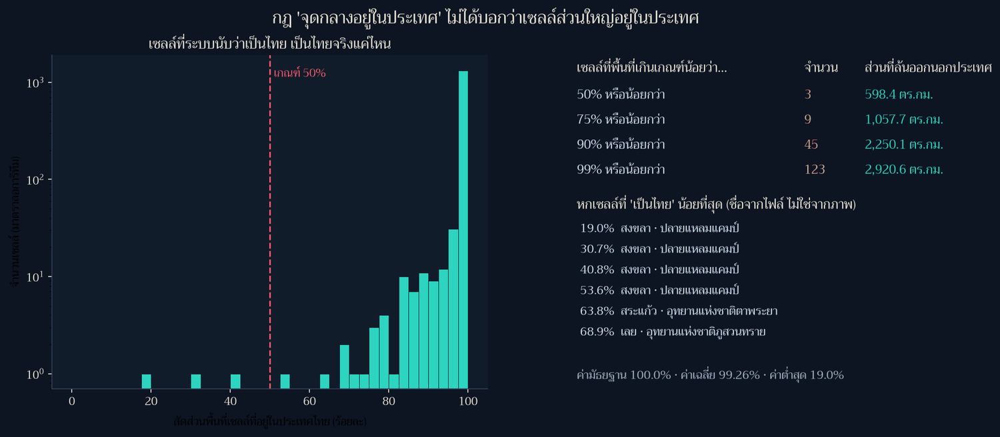
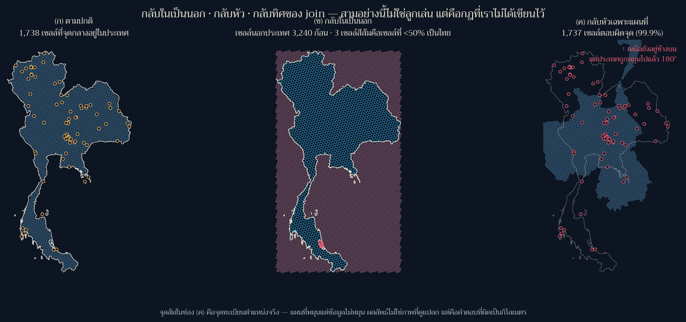
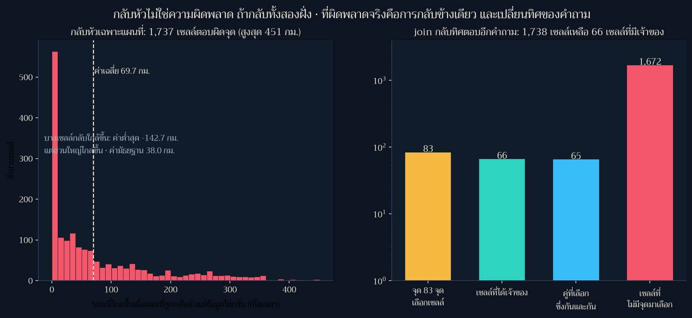

Day 15 · Inside out — กลับกฎสามข้อที่ซีรีส์นี้ใช้อยู่แล้ว แล้ววัดว่าข้อมูลเพี้ยนไปกี่กิโลเมตร

โจทย์ทางการวันนี้คือ “Inside out, upside down. Something on this map is not quite right.” (หัวข้อ Inside out — ดึงข้อความมาจากหน้า 30daymapchallenge.com อ่านสดวันเขียน) แผ่นนี้สร้างในเย็นวันที่ 14 พ.ย. จึงเป็น ล่วงหน้าหนึ่งวัน ตามที่ผมทำเป็นประจำในชาเลนจ์นี้
ทางง่ายคือวาดแผนที่ผิดสักแผ่น แล้วเขียนว่า “สังเกตไหมว่าอะไรผิด” — แต่คำว่า “not quite right” ใน GIS มีอยู่จริงและเป็นตัวเลขได้ ผมจึงเลือกกลับ กฎสามข้อที่ซีรีส์นี้ใช้อยู่แล้ว แล้ววัดของเสีย
| การกลับ | กฎที่ถูกกลับ | สิ่งที่วัด |
|---|---|---|
| ในเป็นนอก | H3 เก็บเซลล์ที่ จุดกลาง อยู่ในประเทศ | เซลล์ที่ระบบนับเป็นไทย เป็นไทยจริงกี่ % ของพื้นที่ |
| กลับหัว | หมุนแผนที่ 180° รอบ centroid แต่ไม่หมุนพิกัดจุดทะเบียน | คำตอบ “จุดที่ใกล้ที่สุด” เปลี่ยนกี่เซลล์ ไกลขึ้นกี่ กม. |
| กลับทิศคำถาม | เปลี่ยน cell → site เป็น site → cell |
ได้คำตอบคนละคำถาม ไม่ใช่คำตอบที่ผิด |
ที่มาของแผนที่
ต้นทางข้อมูลคือของเดิมทั้งซีรีส์ ไม่เพิ่มชุดใหม่
- กริด H3 res 5 ของ Day 3 — 1,738 เซลล์ (สร้างจากขอบ GADM ในวันนั้น)
- เส้นขอบประเทศ Natural Earth 10m (
admin_0_countries) — พื้นที่ 512,593.1 ตร.กม. - ทะเบียนแหล่งท้องฟ้ามืด NARIT 83 จุด
“Something is not quite right” ของแผ่นนี้จึงไม่ใช่ภาพที่วาดผิด แต่คือ ช่องว่างระหว่างกฎที่ระบบใช้ กับความจริงบนพื้น ซึ่งวัดได้ด้วยการ clip, การหมุน, และการสลับทิศของ join
ผลลัพธ์
๑. ในเป็นนอก — เซลล์ที่ระบบบอกว่า “เป็นไทย” เป็นไทยจริงแค่ไหน

เอา 1,738 เซลล์มา clip กับเส้นขอบประเทศจริงแล้วหารด้วยพื้นที่เซลล์เต็ม
| สถิติ | ค่า |
|---|---|
| ค่ามัธยฐาน | 100.0% |
| ค่าเฉลี่ย | 99.257% |
| ค่าต่ำสุด | 18.97% |
| ค่าสูงสุด | 100.0% |
และนับตามเกณฑ์
| เกณฑ์ (พื้นที่ในไทยน้อยกว่า) | จำนวนเซลล์ | ส่วนที่ล้นออกนอกประเทศ |
|---|---|---|
| 50% | 3 | 598.4 ตร.กม. |
| 75% | 9 | 1,057.7 ตร.กม. |
| 90% | 45 | 2,250.1 ตร.กม. |
| 99% | 123 | 2,920.6 ตร.กม. |
| ไม่เต็ม 100% | 481 | 2,966.7 ตร.กม. |
หกเซลล์ที่มีค่าต่ำสุดของสัดส่วนพื้นที่ในไทย — ชื่อจังหวัดและจุดทะเบียนอ่านจากไฟล์ ไม่ใช่ถอดจากภาพ
| สัดส่วนพื้นที่ในไทย (6 ค่าต่ำสุด) | จังหวัด | จุดทะเบียนที่ใกล้ที่สุด |
|---|---|---|
| 19.0% | สงขลา | ปลายแหลมแคมป์ |
| 30.7% | สงขลา | ปลายแหลมแคมป์ |
| 40.8% | สงขลา | ปลายแหลมแคมป์ |
| 53.6% | สงขลา | ปลายแหลมแคมป์ |
| 63.8% | สระแก้ว | อุทยานแห่งชาติตาพระยา |
| 68.9% | เลย | อุทยานแห่งชาติภูสวนทราย |
สี่เซลล์แรกของสงขลาอยู่ที่ละติจูด 7.35–7.63° ลองจิจูด 100.22–100.37° ซึ่งคือแนวทะเลสาบสงขลา และชายฝั่งอ่าวไทย — จุดกลางเซลล์อยู่บนฝั่ง ระบบจึงนับทั้งก้อนเป็นประเทศ ทั้งที่ค่าต่ำสุด (18.97% เป็นพื้นที่ในไทย เท่ากับ 81.03% อยู่นอกเส้นขอบบก) อยู่ห่างจากคำว่า “เป็นไทย” พอสมควร เซลล์ 1,555 เซลล์จาก 1,738 clip แล้วได้พื้นที่ครบทั้งก้อนไม่มีส่วนนอกประเทศปน ที่เหลือคือรอยต่อที่กฎจุดกลางมองไม่เห็น นี่คือ “inside out” ที่ไม่ใช่ลูกเล่น: กฎจุดกลางเป็นเพียง ข้อจำกัดของวิธีการ ไม่ใช่คำรับประกันว่าเซลล์นั้นเป็นไทย
ในทางกลับกัน ถ้าถามว่า “อะไรอยู่นอกประเทศใกล้เราที่สุด” — ในกล่องคลุมประเทศ (bounding box) มี ตาราง res 5 ทั้งหมด 4,978 เซลล์ เป็นของไทย 1,738 เซลล์ และ 3,240 เซลล์ที่ไม่ใช่ไทย ประเทศเรากินพื้นที่เพียง 34.93% ของกล่องที่แผนที่มักจะแสดง

๒. กลับหัว — แผนที่หมุน แต่ข้อมูลไม่หมุน

หมุนเซลล์ทั้ง 1,738 ก้อนไป 180° รอบ centroid ของประเทศ (แบบเดียวกับที่คนดูภาพกลับหัวทำ) แต่ปล่อยพิกัดจุดทะเบียน 83 จุดไว้กับที่ แล้วถามคำถามเดิม “จุดทะเบียนที่ใกล้ที่สุดของเซลล์นี้คือจุดไหน”
- 1,737 จาก 1,738 เซลล์ตอบผิดจุด (99.94%) — เหลือเซลล์เดียวที่โชคช่วย
- ระยะทางสู่จุดที่ใกล้ที่สุดเฉลี่ยเพิ่มจาก 57.368 กม. เป็น 127.054 กม.
- ส่วนที่ไกลขึ้น: ค่าต่ำสุด −142.714 กม. (บางเซลล์ใกล้ขึ้น) · ค่ามัธยฐาน 38.049 กม. · ค่าเฉลี่ย 69.686 กม. · ค่าสูงสุด 450.898 กม.
และนี่คือส่วนที่ผมชอบที่สุดของการทดลอง: ถ้าหมุนทั้งสองฝั่งพร้อมกัน การกลับหัวไม่ใช่ความผิดพลาดเลย วัดระยะบนระนาบ projection เดียวกัน ผลต่างสัมบูรณ์สูงสุด = 0.0 ม. (rigid motion ตามนิยาม) แต่ถ้าไปวัดระยะทางบนทรงกลมหลังหมุนในระนาบ จะได้ผลต่างถึง 0.849 กม. เพราะ “การหมุนแผนที่” ใน projection หนึ่ง ไม่ใช่ “การหมุนโลก” — สองอย่างนี้ฟังดูเหมือนกัน แต่ไม่เท่ากัน
๓. กลับทิศของ join — ตั้งคำถามจากฝั่งจุด
ซีรีส์นี้ตอบคำถาม “เซลล์นี้ใกล้จุดไหน” มาตั้งแต่ Day 3 วันนี้ลองถามกลับ “จุดนี้ใกล้เซลล์ไหน” (เริ่มจากฝั่งจุด 83 จุด เลือกเซลล์ที่ใกล้ตัวมันที่สุด)
| ตัวเลข | ค่า |
|---|---|
| จุดในทะเบียน | 83 |
| เซลล์ที่ถูกเลือก (ไม่ซ้ำ) | 66 |
| เซลล์ที่ไม่มีจุดใดเลือกเลย | 1,672 |
| จุดที่ต้องใช้เซลล์ร่วมกัน | 17 |
| คู่ที่เลือกซึ่งกันและกัน (mutual) | 65 |
| เซลล์ที่ถูกเลือกแต่คำตอบของตัวเองไม่ตรง | 18 |
| ผู้ใช้เซลล์นั้นไกลขึ้นเฉลี่ย | 2.951 กม. (สูงสุด 22.704 กม.) |
ข้อสรุปไม่ใช่ “join กลับทิศให้คำตอบผิด” แต่คือ มันตอบอีกคำถามหนึ่ง — ถ้าเอา 66 เซลล์ที่จุดเลือก ไปทำแผนที่ “พื้นที่ให้บริการของจุดทะเบียน” จะได้แผนที่ที่มีรูโหว่ 1,672 เซลล์ เพราะการจับคู่แบบ nearest neighbour ไม่กลับด้าน (cell→site เป็นฟังก์ชัน, site→cell ไม่ใช่ตัวผกผันของมัน) จุด 17 จุดใช้เซลล์เดียวกับจุดอื่น และใน 18 กรณี เซลล์ที่ถูกเลือกกลับตอบว่าจุดอื่นใกล้กว่าตัวเอง
๔. ของแถม: ตัวเลขเก่าที่หาที่มาไม่ได้ ถูกคำนวณซ้ำแล้วตรงกัน
check_series.py เคยฟ้องว่าตัวเลขในโพสต์ Day 7 หาที่มาใน artifact ไม่ได้ ผมคำนวณใหม่ด้วยวิธีของวันนี้
| ตัวเลขในโพสต์ Day 7 | คำนวณใหม่ 14 พ.ย. | ต่าง |
|---|---|---|
| 18,692 ตร.กม. (hex กลบไม่ถึง) | 18,692.57 ตร.กม. | +0.6 |
| 2,967 ตร.กม. (hex ล้นออกนอกเส้น) | 2,966.68 ตร.กม. | −0.3 |
ตัวเลขทั้งสอง ถูก มาตั้งแต่ต้น แค่ไม่เคยถูกเก็บไว้ในไฟล์ artifact — บทเรียนเรื่อง “ตัวเลขที่ย้อนกลับ ไปที่ไฟล์ไม่ได้ ถือว่าผิดไว้ก่อน” ยังใช้ได้ แม้คนที่ผิดคือผมเองเมื่อสองสัปดาห์ก่อน
วิธีทำแบบย่อ
- อ่านกริด Day 3 (1,738 เซลล์) + เส้นขอบ NE 10m + ทะเบียน 83 จุด
shapely.intersectionแบบ elementwise (ไม่ใช้GeoSeries.distance/intersectionที่ index เพี้ยน) → พื้นที่เซลล์หลัง clip ÷ พื้นที่เซลล์เต็ม =inside_share- เติม H3 res 5 ใน bounding box ทั้งกล่อง → เซต complement =
bbox_cells − inside_cells - หมุนเซลล์ 180° รอบ centroid ใน projection Equidistant Conic (หน่วยเมตร) แล้วแปลงกลับเป็น lon/lat เพื่อถามคำถาม nearest เดิมใหม่ (haversine chunk เดียวกับ Day 14)
- สลับแกน
argmin(axis=1)เป็นargmin(axis=0)เพื่อทำ join ฝั่งจุด แล้วนับ mutual pairs - ตรวจ:
guard_area(พื้นที่ประเทศ),guard_bbox(เซลล์และจุด),guard_distances(ระยะต้องไม่เกิน 2,500 กม.),guard_variance, assert ว่าinside_share ≤ 1, assert ว่าการหมุนสองฝั่งบนระนาบต้องให้ ผลต่าง 0, และlint_thai+ สแกน unicode ทั้งไฟล์ - เขียน
day15_stats.json+day15_cells_inside_out.csvแล้วให้โพสต์อ่านจากสองไฟล์นี้เท่านั้น
ข้อจำกัดที่ต้องบอกตรง ๆ
- ตัวเลข 2,966.7 ตร.กม. ที่ “ล้นออกนอกประเทศ” เกิดจากการผสมต้นทาง — กริดของ Day 3 สร้างจากขอบ GADM แต่วันนี้ clip กับขอบ Natural Earth 10m ซึ่งเป็นมาตรฐานที่ซีรีส์ใช้ตั้งแต่ Day 8 ถ้า clip ด้วย GADM ของวันนั้นเอง ตัวเลขจะต่างออกไป (ผมยังไม่ได้รันเทียบ เพราะไฟล์ GADM ไม่ได้อยู่ในเครื่อง)
- 18,692.57 ตร.กม. ที่ “hex กลบไม่ถึง” ไม่ใช่พื้นที่ประเทศจริงที่หายไปทั้งหมด — ส่วนหนึ่งคือทะเลสาบ และเกาะเล็กที่เส้นขอบมีแต่กริดจุดกลางไม่ครอบคลุม
- การหมุน 180° ใน projection ไม่ใช่การหมุนทรงกลม — ผมวัดทั้งสองแบบและรายงานต่างกัน (0.0 ม. บนระนาบ · 0.849 กม. บนทรงกลม) เพื่อไม่ให้ตัวเลขเดียวถูกตีความเป็นสองเรื่อง
- ช่อง (ค) ในภาพหลักไม่ใช้แผนที่สำหรับใช้งาน — เป็นภาพประกอบคำอธิบายที่จงใจให้ผิดกติกาการอ่านแผนที่
- แผ่นนี้ทำล่วงหน้าหนึ่งวัน (เย็นวันที่ 14 สำหรับวันที่ 15) และรันซ้ำได้ผลตรงกันเพราะใช้ seed เดิม และไม่มีขั้นตอนสุ่มในบทที่ 2–4
- ฟอนต์ไทยในภาพคือ Trirong ฝังในไฟล์ PNG ผู้ดูไม่ต้องมีฟอนต์นี้จึงจะเห็นตัวหนังสือไม่เพี้ยน
ไฟล์ประกอบ
- day15_inside_out.png — แผ่นหลักสามช่อง (ปกติ / กลับในเป็นนอก / กลับหัว)
- day15_inside_share.png — การกระจายของ % พื้นที่เซลล์ที่เป็นไทยจริง
- day15_upside_down.png — ความเสียหายจากการกลับหัว + ผลของการกลับทิศ join
- day15_cells_inside_out.csv — ทุก 1,738 เซลล์: พื้นที่เต็ม, พื้นที่ในไทย, สัดส่วน, คำตอบถ้าแผนที่ถูกกลับหัว
- day15_stats.json — ตัวเลขทุกตัวในโพสต์นี้ พร้อม
metric_definitions,cross_check_day07และcross_check_day14


บทเรียน
- ลูกเล่นกับข้อเท็จจริงแยกกันด้วยการวัด — “กลับหัว” เป็นความผิดพลาดก็ต่อเมื่อหมุนฝั่งเดียว ถ้าหมุนทั้งสองฝั่ง ระยะทางไม่เปลี่ยนแม้แต่มิลิเมตรเดียว การทดลองนี้บอกเส้นแบ่งนั้นด้วยตัวเลข
- projection ไม่ใช่โลก — การหมุนใน Equidistant Conic ต่างจากการหมุนบนทรงกลม 0.849 กม. ซึ่งน้อยจนไม่มีใครสังเกตบนแผนที่ประเทศ แต่ไม่ใช่ศูนย์ และคนทำแผนที่ไม่ควรรู้สึกปลอดภัยกับ คำว่า “ก็แค่หมุน”
- nearest-neighbour join ไม่กลับด้าน — cell→site เป็นฟังก์ชันจาก 1,738 เซลล์ไป 83 จุด แต่ site→cell เลือกได้แค่ 66 เซลล์ เหลือ 1,672 เซลล์ที่ไม่มีเจ้าของ ถ้าใครเอาคำตอบจากฝั่งจุด ไปทำ choropleth “พื้นที่ให้บริการ” จะได้แผนที่ที่มีรูโหว่โดยที่ข้อมูลไม่ได้ขาด
- กฎที่เขียนไม่ครบคือบั๊กที่ทำงานอยู่เงียบ ๆ — “เซลล์ที่จุดกลางอยู่ในประเทศ” ไม่ได้บอกว่า “เซลล์ส่วนใหญ่อยู่ในประเทศ” และผลลัพธ์คือสี่เซลล์แนวทะเลสาบสงขลาที่เซลล์หนึ่งเป็นน้ำถึง 81.03% ซึ่งถูกนับเป็นไทยมาตั้งแต่ Day 3 โดยไม่มีใครทัก